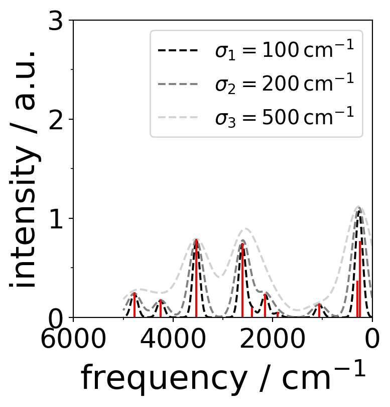
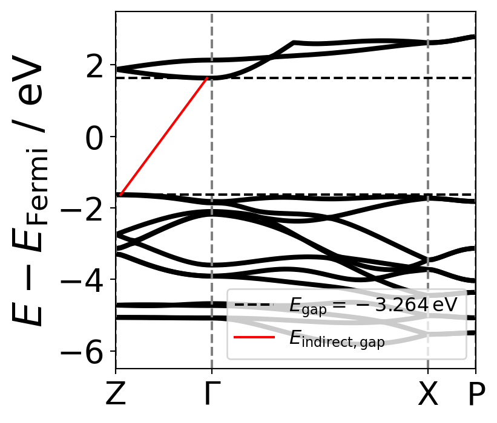
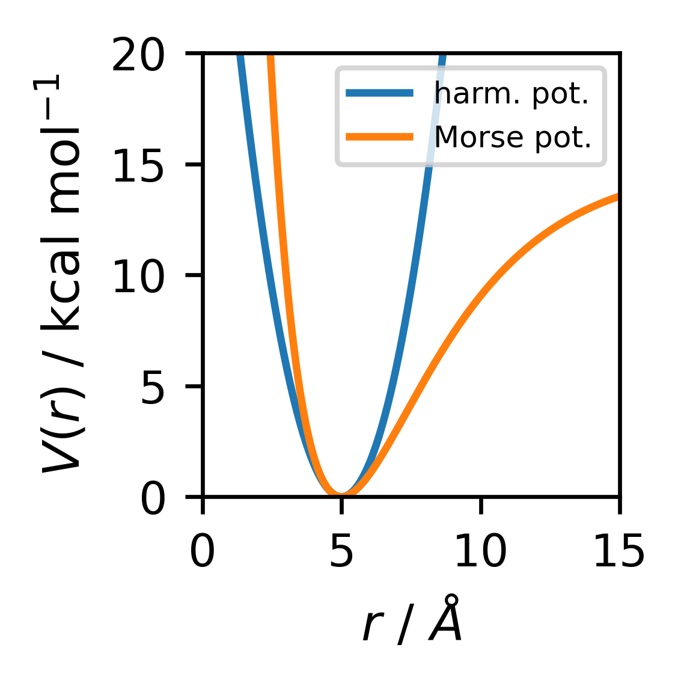

import matplotlib.pyplot as pltfrom matplotlib.ticker import AutoMinorLocator,FixedLocator# global matplotlib settingsplt.rcParams.update({'legend.fontsize': 18,'figure.figsize': (4, 4),'axes.labelsize': 25,'xtick.labelsize': 20,'ytick.labelsize': 20})# create a figure with a subfigure to create 2 different y-axesfig, ax1 = plt.subplots()# create second subfigure with with sharing the x-axis of ax1 subfigureax2 = ax1.twinx() # plot the first data as line plot as ax1 subfigure# set color, linewidth, marker symbol and labelax1.plot(data[:,0], data[:,1], color="grey", linewidth=3, marker="x",label="data1")# define the color of the y-axisax1.tick_params(axis='y', labelcolor="grey")# plot the second data as the ax2 subfigure by using scatter plotax2.scatter(data[:,0], data[:,2],color="black", linewidths=3,label="data2")ax2.tick_params(axis='y', labelcolor="black")# add all labels in one lines1, labels1 = ax1.get_legend_handles_labels() # get labels of ax1 subfigurelines2, labels2 = ax2.get_legend_handles_labels() # get labels of ax2 subfiguresax2.legend(lines1 + lines2, labels1+ labels2, loc=4) # location of legend# set x- and y-limits of the axesax1.set_xlim(0,1500)ax1.set_ylim(-0.1,5)ax2.set_ylim(-0.1,400)# set the x- and y-labels of the axesax1.set_xlabel(r"$x$ / a.u")ax1.set_ylabel(r"$y_1$ / a.u.",color="grey") # define also the color of the labelsax2.set_ylabel(r"$y_2$ / a.u.",color="black")# create a vertical line at 800 starting from 0 until 5ax1.axvline(800,0,5,color="red",linewidth=3)# define manjor and minor axes ticksax1.xaxis.set_major_locator(FixedLocator(np.arange(0, 2000, 500)))ax1.xaxis.set_minor_locator(AutoMinorLocator(2))ax1.yaxis.set_major_locator(FixedLocator(np.arange(-1, 6, 1)))ax1.yaxis.set_minor_locator(AutoMinorLocator(2))ax2.yaxis.set_major_locator(FixedLocator(np.arange(-100, 500, 100)))ax2.yaxis.set_minor_locator(AutoMinorLocator(2))# save the figure as png# plt.savefig("figure.png", dpi=300)# show the pictureplt.show()
Line spectra with Gaussian broadening
import numpy as npimport matplotlib.pyplot as plt# create random frequencies between 20 and 5000 cm-1 vib = np.random.rand(10)*(5000-20)# with random intensityintensity = np.random.rand(10)# define gaussian broadeningdef spectrum(vib,intensity,sigma,v): gvib=[]for vibi in v: tot=0for vibj,I inzip(vib,intensity): tot = tot + I*np.exp(-((((vibj-vibi)/sigma)**2))) gvib.append(tot)return gvib# create the broaded function with smooth frequency valuesv=np.linspace(0,5000, num=10000, endpoint=True)# use different sigmasigma1=100sigma2=200sigma3=400gvib1=spectrum(vib,intensity,sigma1,v)gvib2=spectrum(vib,intensity,sigma2,v)gvib3=spectrum(vib,intensity,sigma3,v)fig,ax=plt.subplots(figsize=(4,4))# plot the gaussian broadeningsax.plot(v,gvib1,"--k", label=r"$\sigma_1=100\,\mathrm{cm^{-1}}$")ax.plot(v,gvib2,linestyle="--", color="grey", label=r"$\sigma_2=200\,\mathrm{cm^{-1}}$")ax.plot(v,gvib3, linestyle="dashed", color="lightgrey", label=r"$\sigma_3=500\,\mathrm{cm^{-1}}$")# plot the line spectrafor v,I inzip(vib,intensity): ax.plot((v,v),(0,I),c="red")# or use vlinesax.vlines(v,0,I,color="red")# set x- and y-axis limitsax.set_xlim(0,6000)ax.set_ylim(0,3)# set minor ticksax.xaxis.set_minor_locator(AutoMinorLocator(2))ax.yaxis.set_minor_locator(AutoMinorLocator(2))# invert the x-axisplt.gca().invert_xaxis()# set the axes labelsplt.xlabel('frequency / cm$^{-1}$')plt.ylabel('intensity / a.u.')# plot the legendplt.legend(fontsize=15)# save the figure# # plt.savefig('random_line_spectra.png')plt.show()

Band Plot
import numpy as npimport matplotlib.pyplot as plt# define the kpoints and the kpoint_labelskpoints = np.array([1,21,66,76])kpoint_labels = ["Z",r"$\Gamma$","X","P"]# an example of random band databands = np.genfromtxt("../data/band_tot.dat")
EFermi =-0.5681#eV taken from detailed.out# size of the band datashape = bands.shape# put all data in one array to calculate the band gapy = np.array([])for i inrange(1,shape[1]): y = np.append(y,bands[:,i])x = np.array([])for i inrange(1,shape[1]): x = np.append(x,bands[:,0])# use the convention of E-EFermi yF = y - EFermi# the maximum energy of the valence bandmax_valence = np.max(yF[yF<0])# the minimum energy of the conduction bandmin_conduction = np.min(yF[yF>0])k_max_valence = x[np.argmin(yF[yF>0])]k_min_conduction = x[np.argmax(yF[yF<0])]# band gapE_gap = max_valence - min_conduction
plt.figure()# plot the bandsfor i inrange(1,19): plt.plot(bands[:,0], bands[:,i]-EFermi, color="black", linewidth=3)# plot the vertical lines for the k-points of the Brillouin zonefor j in kpoints: plt.axvline(j, color="grey", linestyle="dashed")# set some axes limitsplt.xlim(1,76)plt.ylim(-6.5,3.5)# plot Egapplt.axhline(max_valence, color="black", linestyle="dashed")plt.axhline(min_conduction, color="black", linestyle="dashed",label=r"$E_{\mathrm{gap}}=%2.3f\,\mathrm{eV}$"%E_gap)plt.plot([k_min_conduction,k_max_valence],[max_valence,min_conduction], color="red",label=r"$E_{\mathrm{indirect,gap}}$")plt.xticks(kpoints,kpoint_labels)plt.ylabel(r"$E-E_{\mathrm{Fermi}}$ / eV")plt.legend(fontsize=12,loc=4)plt.show()

import numpy as npimport matplotlib.pyplot as plt# it is used for constantsfrom scipy import constants# it is used for showing the latex equationsfrom IPython.display import display, Latex# define constantseV = constants.eVhbar = constants.hbarmol = constants.Avogadrocal = constants.caloriekB = constants.ku = constants.uA = constants.angstromprint("eV = ",eV, "J")print("hbar = ",hbar, "J s")print("mol = ",mol, "mol")print("cal = ",cal, "J")print("kB = ",kB, "J K-1")print("u = ",u, "kg")print("A = ",A, "m")display(Latex( r"$\nu = \frac{1}{2\pi}\sqrt{\frac{k}{\mu}}$ in cm $^{-1}$"))display(Latex(r"$\mu = \frac{m_1 \cdot m_2}{m_1 + m_2}$ in g $\cdot$ mol $^{-1}$"))
eV = 1.602176634e-19 J
hbar = 1.0545718176461565e-34 J s
mol = 6.02214076e+23 mol
cal = 4.184 J
kB = 1.380649e-23 J K-1
u = 1.6605390666e-27 kg
A = 1e-10 m
\(\nu = \frac{1}{2\pi}\sqrt{\frac{k}{\mu}}\) in cm \(^{-1}\)
\(\mu = \frac{m_1 \cdot m_2}{m_1 + m_2}\) in g \(\cdot\) mol \(^{-1}\)
Plot functions
# plt.switch_backend("TkAgg") # it is used for plotting the figures in the jupyter notebook as interactive figures# %matplotlib widgetplt.rcParams.update({'legend.fontsize': 9,'figure.figsize': (2,2),'axes.labelsize': 10,'xtick.labelsize': 9,'ytick.labelsize': 9})# array of r values from 0 to 10 with 100 pointsr = np.linspace(0, 15, 1000)# force constant is extractedk =3# check the units of k it should be in kcal mol-1 A-2# translation of the units# harmonic potentialdef harmonic_potential(r, k, r0):return0.5* k * (r-r0)**2def morse_potential(r, D, a, r0):return D * (1- np.exp(-a*(r-r0)))**2fig = plt.figure(dpi=300)plt.plot(r, harmonic_potential(r, k, 5), label=r"harm. pot.")plt.plot(r, morse_potential(r, 15,0.3, 5), label=r"Morse pot.")plt.xlabel(r"$r$ / $\AA$")plt.ylabel(r"$V(r)$ / kcal mol$^{-1}$")plt.xlim(0, 15)plt.ylim(0, 20)plt.legend(fontsize=6)plt.tight_layout()plt.show()

Fit a function to data
from scipy.optimize import curve_fitfrom sklearn.metrics import r2_scoreimport numpy as npimport matplotlib.pyplot as plt# global matplotlib settingsplt.rcParams.update({'legend.fontsize': 9,'figure.figsize': (2,2),'axes.labelsize': 10,'xtick.labelsize': 9,'ytick.labelsize': 9})# define the function to fitdef harmonic_potential(r, k, r0):return0.5* k * (r-r0)**2# generate some datar = np.linspace(0, 15, 1000)k =3r0 =5data = harmonic_potential(r, k, r0) + np.random.normal(0, 0.5, r.size)# fit the datapopt, pcov = curve_fit(harmonic_potential, r, data)# calculate the R2 scorer2 = r2_score(data, harmonic_potential(r, *popt))# print the fit parametersprint("k = ", popt[0], " +/- ", np.sqrt(pcov[0,0]))print("r0 = ", popt[1], " +/- ", np.sqrt(pcov[1,1]))print("R2 = ", r2)plt.figure(dpi=300)# plot the data and the fitplt.plot(r, data, label="random data")plt.plot(r, harmonic_potential(r, *popt), label=r"$V(r) = \frac{1}{2} k (r-r_0)^2$"+"\n"+r"$k = %2.4f \pm %2.4f$"%(popt[0], np.sqrt(pcov[0,0])) +"\n"+r"$r_0 = %2.4f \pm %2.4f$"%(popt[1], np.sqrt(pcov[1,1])) +"\n"+r"$R^2 = %2.4f$"%r2)plt.xlabel(r"$r$ / $\AA$")plt.ylabel(r"$V(r)$ / kcal mol$^{-1}$")plt.tight_layout()plt.legend(fontsize=3)plt.xlim(0, 15)plt.ylim(0, 20)plt.show()